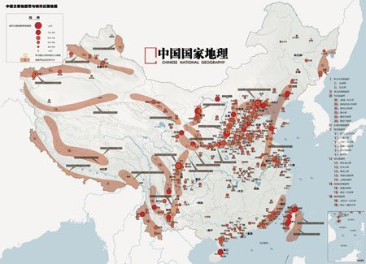
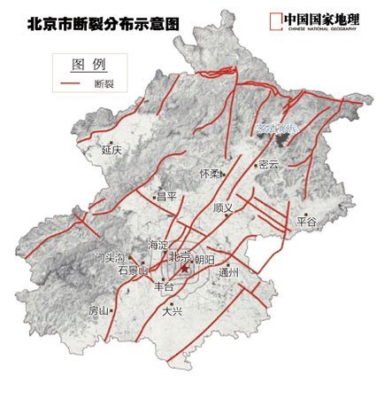
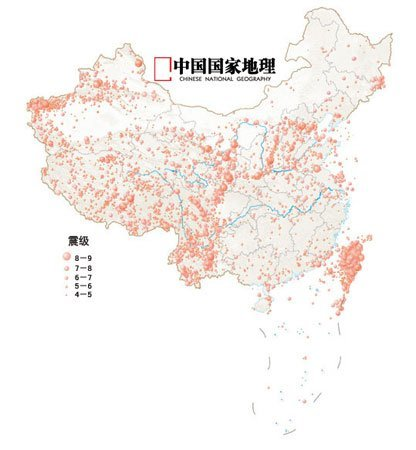

中国主要地震带是哪里？
最佳答案
中国主要地震带及分布(组图)

中国以占世界7%的国土承受了全球33%的大陆强震，是大陆强震最多的国家。
中国是世界上地震灾害最严重的国家。这样一组数据：20世纪以来，中国共发生6级以上地震近800次，遍布除贵州、浙江两省和香港特别行政区以外所有的省、自治区、直辖市，死于地震的人数达55万之多，占同期全球地震死亡人数的53%。中国人常为“我们用占世界7%的土地，养活了占世界22%的人口”而自豪，却很少有人知道中国这7%的国土上也承受了全球33%的大陆强震，是世界上大陆强震最多的国家。中国人抗震意识的薄弱，是我国和日本最大的区别。
西部地震频度高，东部地震影响大
汶川大地震以前，我国近年的大地震是哪次？1976年唐山大地震，7.8级。在2001年就有一场8.1级的地震——东昆仑地震。因为发生在荒无人烟的青藏高原，所以并不被大众所知了，中国西部的很多地震都是这样。在《中国地震带分布图》上自北向南沿贺兰山、六盘山、秦岭、大凉山一线划过：“这是南北地震带，它把我国分成了东西两部分，西部地区的地震在频度和烈度上都远远高于东部地区。地震‘偏爱’西部，往往西部发生5、6场地震，东部才发生1场地震。原因就是我国的‘邻居’印度板块太‘热情’，不断北移，把西部地区挤得太厉害了。

图为北京断裂分布示意图 (图片来源：《中国国家地理》杂志2008年第6期)
华北地震区也是我国重要的地震区，它对北京、天津、辽宁、河北、河南、山西、陕西、山东、江苏、安徽等10个省和直辖市都有影响。这一地区又是我国传统的政治经济中心，就像是中国的心脏，心脏一旦遭到大震，全身都会倍受打击。
《清史稿》中记载了(康熙)十八年北京附近发生的一次强震。
北京附近发生过如此可怕的大地震，北京还安全吗？
“北京的问题不大。”一位地震专家讲述了他的理由：“每一次地震，都是地球释放内部能量的过程。能量释放后，就又进入能量积蓄阶段，直到发生新的地震。”认为和北京有关的几条断裂带，如八宝山断裂、黄庄-高丽营断裂南段、顺义-良乡断裂南段，在很长一段时间以来活动性都很弱或基本不活动，这些断裂引发大地震的可能性并不大。他最后还强调了一点：“地震最可怕的是它在你毫无准备的时候给你致命一击。所以最重要的还是提高人们的防震意识、建筑物的抗震能力，这两方面工作到位，就算遭遇大地震也不会造成惨痛的后果。”

图为中国历史地震震中分布图 (图片来源：《中国国家地理》杂志2008年第6期)
图1由三个方面的主体信息组成。首先，以1998年版《中国自然地理图集》中的《中国地震带分布图》为蓝本。其次，给出了《中国城市近源地震等效震级分类图》，数据来源于《中国城市地震灾害危险度评价》(作者：北京师范大学环境演变与自然灾害教育部重点实验室徐伟、王静爱、史培军、周俊华)。在研究中，上述学者参照国际惯例，把以城市为中心、30公里为半径的范围内发生的地震定义为城市近源地震。另外，据中国地震局地质研究所邓起东等发表的《中国活动构造与地震活动》一文中，迄今为止，有记载以来的8级巨大地震发生地。
其他回答 (4条回答)
本地震区是我国最大的一个地震区，也是地震活动最强烈、大地震频繁发生的地区，居全国之首。目前为止，我国有23条主要的地震带。涉及到青海、西藏、新疆、甘肃、宁夏、四川、云南全部或部分地区。华北地震区：包括河北、河南、山东、内蒙古、山西、陕西、宁夏、江苏、安徽、辽宁等省的全部或部分地区。在五个地震区中，它的地震强度和频度仅次于“青藏高原地震区”，位居全国第二。由于首都圈位于这个地区内，加之它位于我国人口稠密、大城市集中、政治和经济、文化、交通都很发达的地区，地震灾害的威胁严重。新疆地震区：由于新疆地震区总的来说，人烟稀少、经济欠发达。尽管强烈地震较多，也较频繁，但多数地震发生在山区，造成的人员和财产损失与我国东部几条地震带相比，要小许多。台湾地震区：处在环太平洋地震带上，亚欧大陆板块和菲律宾板块的交界处，东部地区地震频发，因多发生在外海，造成的灾害相对较少。西部地震虽不如东部地震频繁，但因其震源较浅，且多发生在陆地，加之人口稠密，破坏性... 展开